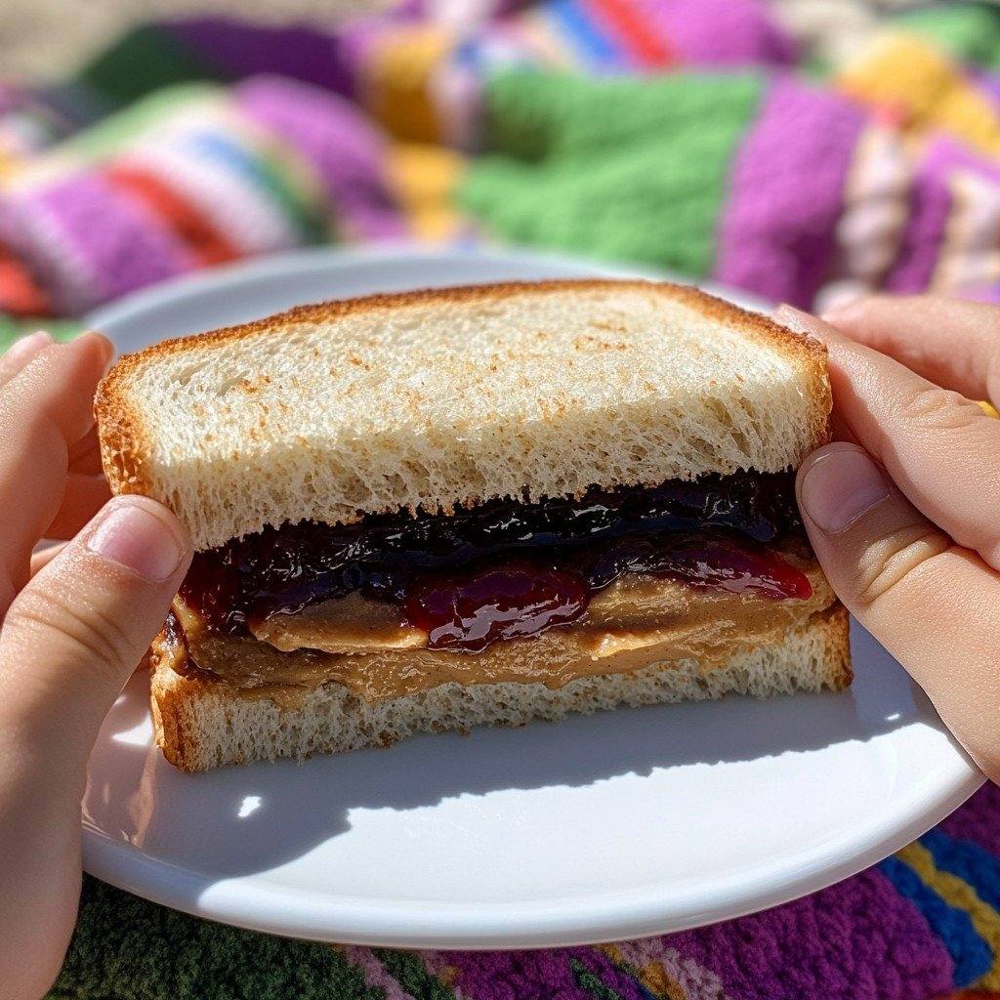

PB & J

Description
The ULTIMATE PB & J sandwich recipe. This unambigous recipie will make sure you
NEVER have to wonder if you're doing it right ever again. This will be the most detailed recipe you will ever see.
Ingredients
Steps
- Set all the ingredients on a table (or other flat surface) while still in their respective packages.
- Unwrap the bread from the bread bag and grab two slices of bread, ensuring that they remain intact and are not deformed
- Set both slices down (preferrably on a plate) side by side so that they are touching but not overlapping.
- Pick up the peanut butter jar, unscrew the lid to the peanut butter, ensuring that all peanut butter in the jar remains in the jar.
- Set the jar of peanut butter back down, ensuring that the bottom of the bottle (the end opposite of the opening) is set down flat on the table.
- Pick up a butter knife (metal preferred, but plastic is totally acceptable) with your dominant hand, ensuring that you are holding the handle end (usually slightly thicker) and NOT the blade end.
- Use your non-dominant hand to hold the peanut butter jar using small amounts of force to stablize the jar.
- Continue to hold the jar with your non-dominant hand as you use your dominant hand to navigate the butter knife into the jar throught the main opening (where you just removed the lid from).
- Use sufficient but not excessive force to scoop out the peanut butter with the butter knife's blade end. Be sure to anticiapte any extra force necessary and to counteract that with your non-dominant hand so that the jar remains stable.
- Once you have scooped out 32 grams of peanut butter (±2 grams). Gently scrape the peanut butter onto one side of one of the slices of bread, ensuring that you choose the side with the most surface area, picking up the slice of bread if necessary.
- Pick up the jelly jar, unscrew the lid to the jelly, ensuring that all jelly in the jar remains in the jar.
- Set the jar of jelly back down, ensuring that the bottom of the bottle (the end opposite of the opening) is set down flat on the table.
- Pick up a butter knife (metal preferred, but plastic is totally acceptable) with your dominant hand, ensuring that you are holding the handle end (usually slightly thicker) and NOT the blade end.
- Use your non-dominant hand to hold the jelly jar using small amounts of force to stablize the jar.
- Continue to hold the jar with your non-dominant hand as you use your dominant hand to navigate the butter knife into the jar.
- Use sufficient but not excessive force to scoop out the jelly with the butter knife's blade end. Be sure to anticiapte any extra force necessary and to counteract that with your non-dominant hand so that the jar remains stable.
- Once you have scooped out 32 grams of jelly (±2 grams). Gently scrape the jelly onto one side of the other slice of bread, ensuring that you choose the side with the most surface area, picking up the slice of bread if necessary.
- Pick up both slices of bread, ensuring that you are only handling the sides without peanut butter or jelly.
- Gently bring the two slices of bread together such that the peanut butter side of the first slice meets with the jelly side of the second slice.
- Once the two sides have met, apply 0.5N of force to each slice from the from their non-peanut butter/jelly sides towards their peanut butter/jelly sides.
- set the completed sandwich down on your plate (if you have one) so that the peanut butter and jelly layers are parallel to the floor/table.
Home